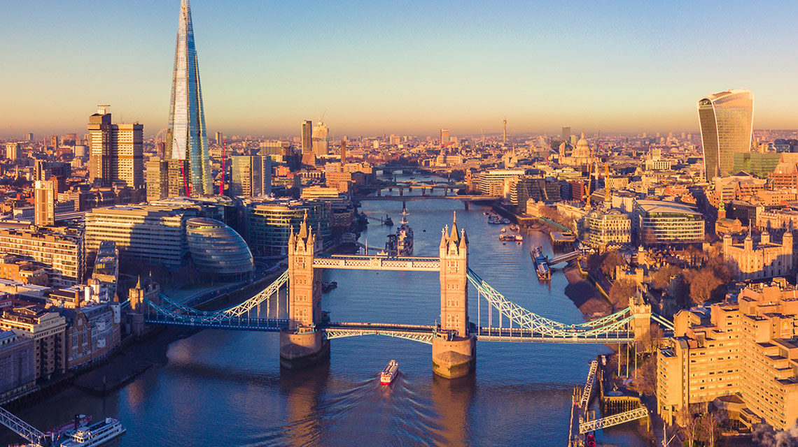

CURIOZITATI DESPRE LONDRA, CATEVA DETALII INTERESANTE

Marele smog
S-ar putea să ne confruntăm cu niveluri periculos de ridicate de poluare în acest moment, dar fiți recunoscători că nu ați fost prin preajmă pentru a asista la ceața din secolul al XIX-lea. Porecla capitalei datează din acea perioadă, apărând pentru prima dată într-un dicționar de argou din 1874. Și lucrurile erau cu mult mai rele pe atunci. La 5 decembrie 1952, a avut loc unul dintre cele mai grave evenimente de mediu din istoria Angliei - Marele Smog. Marele Smog din 1952 a fost un fenomen sever de poluare a aerului, care a avut loc la Londra între 5 și 9 decembrie 1952. Dezastrul ecologic s-a datorat faptului că încălzirea locuințelor în metropola britanică se baza în special pe cărbune. Gazele de ardere au format împreună cu ceața un strat de smog cu efecte negative asupra populației. Efectul a fost amplificat de fenomenul de inversiune meteo cauzat de un anticiclon și prin care aerul rece poluat a fost blocat aproape de nivelul solului de un strat de aer cald.Marele smog de la Londra era atât de gros încât, în esență, a închis orașul. Vizibilitatea a fost redusă la aproape nimic, determinând locuitorii să-și abandoneze vehiculele în mijlocul drumurilor. Calitatea slabă a aerului a făcut ca mersul în aer să fie aproape imposibil, deoarece nivelurile de poluanți au creat o atmosferă toxică.
În acea lună au murit peste 4.000 de oameni (prin afecțiuni cardiovasculare și respiratorii), iar în lunile următoare s-au înregistrat alte câteva mii de decese, efectele negative resimțindu-se și pe termen mai lung (prin diverse tipuri de cancer și tulburări neurologice). Cei care au fost afară în timpul ceții, poreclita „supă de mazăre” pentru culoarea sa negru-gălbuie, au suferit numeroase efecte asupra sănătății. Medici au raportat cazuri de infecții ale tractului respirator, hipoxie, bronșită și bronhopneumonie, iar numărul de morți a ajuns în curând la 12.000. Un studiu ulterior a arătat că nivelurile ridicate de acid sulfuric din smog au contribuit foarte mult la decese.
O consecință a accidentului a fost adoptarea, în 1956, a legii Aer Curat ("Clean Air Act"), care avea ca obiectiv reducerea poluării atmosferice în marile orașe britanice. Astfel, industria a fost mutată la periferia Londrei și a început să se renunțe la încălzirea individuală pe bază de cărbuni a locuințelor.
Fenomenul s-a repetat în perioada 12 - 15 decembrie 1991, provocând decesul a 160 de oameni. Deși nu știau încă acest lucru, locuitorii Londrei se confruntau cu ceea ce a devenit cunoscut drept unul dintre cele mai letale dezastre ecologice de până acum. Înainte ca smogul să se ridice, 12.000 de oameni ar fi murit și ar dura aproape 65 de ani pentru ca experții să-și dea seama de ce.
De altfel, denumirea de „smog”, atribuită evenimentului, reprezintă îmbinarea dintre cuvintele englezești „smoke” (fum) și „fog” (ceață)
Alte mici detalii:
» Aproximativ 12% din întreaga populaţie a Regatului Unit este concentrată în Londra.
» Londra are cea mai mare densitate a populaţiei din Marea Britanie, cu aproximativ 4700 de locuitori pe km².
» Canary Wharf Tower este cea mai înaltă clădire din Londra.
» Londra a fost primul oraş din lume cu metrou.
» Este ilegal să mori în Palatul Westminster.
» Numele străzii Cock Lane a fost dat din cauză că era singura stradă pe care prostituţia era legală cu sute de ani în urmă.
» Membrii trupei Beatles au compus şi interpretat primul cântec pe acoperişul clădirii Apple Corps, de la adresa 3 Saville Row. Momentan, locul găzduieşte un magazîn Abercrombie & Fitch.
» În timpul celui de-al doilea razboi mondial, Hitler a vrut să dea jos statuia lui Nelson din Piaţa Trafalgar şi să o instaleze în Berlin.
» Mai bine de 1000 de cadavre sunt îngropate sub stadionul Aldgate, într-o groapă comună săpată pentru cei bolnavi de ciumă în 1665.
» Harrods obişnuia să vândă cocaină până în 1916.
» Soldatul german Josef Jakobs a fost ultima persoană executată la Turnul Londrei, în 1941.
» Londra este cel mai mic oraș din Anglia. Megaorașul pe care cei mai mulți dintre noi îl cunoaștem ca Londra este de fapt numit „Marea Londrei”, în timp ce orașul Londra însuși este o mică parte din această metropolă întinsă.
» Meridianul Greenwich trece prin capitala Marii Britanii. Aici poți fi în două părți ale lumii în doar câteva minute.
» Londra este o metropola vibranta, cu o retea de metrou de 402 kilometri pe care sunt transportati anual 1,3 miliarde de pasageri.
» Simbolul Londrei este Big Ben-ul, turnul cu ceas al Palatului Parlamentului, construit în secolul al XIX-lea în stil neogotic.
» Din punct de vedere tehnic, Londra este o pădure. Capitala Angliei și a Regatului Unit este foarte verde. Spațiul verde de care se pot bucura locuitorii și turiștii în Londra este enorm, atât de mult, de fapt, încât densitatea copacilor pe care îi are pe km pătrat o califică drept pădure conform definiției Națiunilor Unite.
» Londra are cea mai mică statuie oficială. Într-un oraș plin de monumente mărețe și statui uriașe, este interesant de știu că Londra are cea mai mică statuie oficială. Situată pe Philpot Lane, statuia a doi șoareci minusculi care mănâncă brânză este dedicată unor constructori care au murit în timpul construcției Monumentului, după o ceartă din cauza unui sandviș dispărut. Ei au dat vina unul pe celălalt, dar a fost de fapt vina unor șoareci.
»Londra are peste 170 de muzee. Pe lângă cele 300 de limbi vorbite în Londra, cantitatea de muzee din capitală se adaugă la cultura acestui oraș. Londra se mândrește cu peste 170 de muzee, de la uriașul British Museum, cea mai populară atracție turistică a Londrei, până la micul Fan Museum din Greenwich.
Mancare pe toate gusturile
Pentru ca Londra gazduieste un mare mix de populatie, pe langa traditionalii cartofi cu peste (fish ans chips), ai de ales in zona Brick Lane sa te delectezi cu preparate din zona Indiei si a Bangladesului, bucatarie chinezeasca aproape de Soho, preparate grecesti si turcesti in nordul orasului, dar si alte restaurant italienesti si portugheze. Gastro puburile specific londoneze ofera, totusi, si preparate stravechi ale bucatariei englezesti: fripturi cu legume, budinci, placinte de carne sau rinichi; și poate stiai deja ca mic dejunul englezesc este foarte bogat si include omleta, bacon si iahnie de fasole.
Stiati ca in trecut, bucataria englezeasca consta doar in carne si legume fierte? In prezent, aceasta s-a diversificat foarte mult datorita influentelor venite din partea comunitatilor evreiesti, arabe, chinezesti si indiene care si-au facut simtita prezenta in plan culinar.
Stiati ca invazia strainilor a adus in Marea Britanie sofranul, nucsoara, scortisoara, piperul, ghimbirul si zaharul?
Stiati ca englezilor nu le lipseste carnea de vita la pranzul de duminica, servit atat acasa, cat si la restaurant?
Cultură
Londra este unul dintre cele mai mari centre internaţionale de artă. Oraşul găzduieşte cinci orchestre simfonice.
» London Symphony Orchestra
» Phillharmonia
» Royal Philharmonic Orchestra
» London Philharmonic Orchestra
» BBC Symphony Orchestra
Londra este cunoscută şi pentru trupele celebre care şi-au început activitatea aici, precum Pink Floyd, Led Zeppelîn sau Sex Pistols. Cele mai mari concerte din zonă sunt ţinute la Hammersmith Apollo, Astoria şi Brixton Academy.
Carnavalurile locale sunt strâns legate de tradiţiile britanicilor. Carnavalul din Notting Hill este unul dintre cele mai populare evenimente, dar nici paradele de Sfântul George (23 aprilie) sau Sfântul Patrick (17 martie) nu pot fi ignorate.
Existâ mai bine de 100 de teatre mari în Londra, mai mult sau mai puţin comerciale. Majoritatea se află în West End. Printre cele mai putţn comerciale se numără Old Vic, Young Vic, National Theatre şi The Globe.
Arta occidentală veche nu putea fi lăsată mai prejos. Sute de exponate sunt prezentate la National Gallery. Tate Modern prezintă arta contemporană, iar Tate Britain este locul ideal pentru colecţia naţionala de artă britanică. Pasionaţii de pictură sau portrete pot vizita National Portrait Gallery. Sunt peste 240 de muzee răspândite pe teritoriul Londrei:
» British Museum pentru antichităţi
» Victoria and Albert Museum pentru arte decorative
» Imperial War Museum pentru artă de război
Având în vedere că presa naţională este concentrată în capitala britanică, este absolut normal să fie acuzată în repetate rânduri că acoperă Londra mai bine decât alte zone. Fleet Street este celebra stradă a jurnaliştilor, unde majoritatea ziarelor erau tipărite până în anii 1970. Standard Lite, Metro şi Evening Standard sunt cele trei ziare locale. Standard Lite şi Metro sunt distribuite gratuit în staţii de metrou sau tren.
Alături de New York, Milano şi Paris, Londra este una dintre cele patru mari capitale ale modei. Absolut toţi designerii de top din lume au buticuri sau magazine în Londra. Selfridges, Harvey Nichols sau Harrods sunt doar câteva dintre cele mai reprezentative nume.
Cele mai importante evenimente religioase au loc la Catedrala Westminster sau la Catedrala Sf. Paul. Pe lângă catolici, Londra este cel mai mare centru islamist din Regatul Unit. Drept urmare, Moscheea Centrală din Londra este tot timpul populată. Nici templul hindus din Neasden nu este de ignorat, fiind cel mai mare templu hindus din afara Indiei. Cât despre evrei, mai bine de 65% din evreii din Marea Britanie trăiesc în Londra.